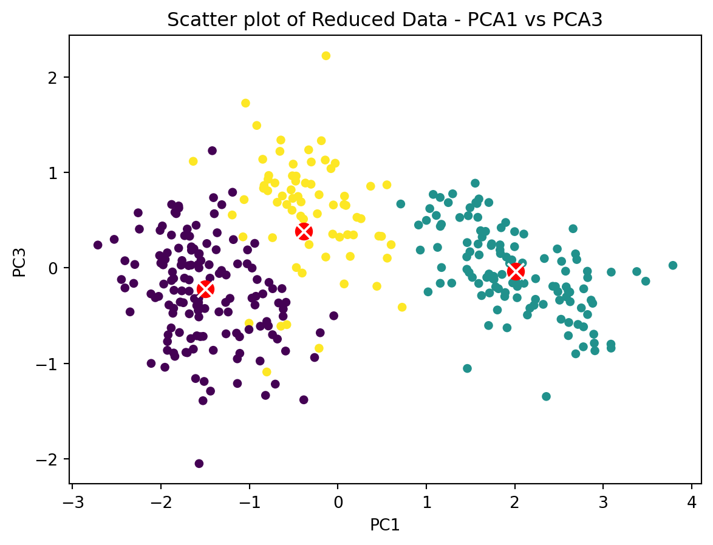

Unsupervised Learning: Clustering Using K-Means and Gaussian Mixture Models
clustering
analysis
visualization
K-Means
Author
Sai Sundeep Rayidi
Published
November 29, 2023
So far we have seen regression and classification algorithms and their many variants. In this blog, we will be exploring another type of learning called Unsupervised Learning. Unlike in regression and classification where we have response variable or target classes, we will not have any predefined labels in unsupervised learning. It is up for the algorithm to learn the similarities and differences and then group the instances that belong together. We will be working with the Penguins dataset in this blog to perform unsupervised learning. At a high level, we will -
Import and Analyze Penguins dataset
Perform K-Means Clustering
Evaluating K-Means Performance and Choosing Optimal Number of Clusters-
Inertia
Silhouette Score
Gaussian Mixture Models
1. Import and Analyze Penguins Dataset
The penguins dataset is available in the seaborn visualization package. Let’s load the dataset and analyze its features and instances.
import numpy as npimport pandas as pdimport matplotlib.pyplot as pltimport seaborn as snspenguins = sns.load_dataset('penguins')print(f"Number of Features: {penguins.shape[0]}")print(f"Number of Observations: {penguins.shape[1]}")print(f"Features - {list(penguins.columns)}")
Number of Features: 344
Number of Observations: 7
Features - ['species', 'island', 'bill_length_mm', 'bill_depth_mm', 'flipper_length_mm', 'body_mass_g', 'sex']
Let us see unique species, islands from the penguins dataset and also the range of values of the numerical features take using pandas describe method. Let us also ensure the dataset is free from any nulls or missing values (NaN) by calculating the percentage of Nulls or NaNs in each column.
We do have missing or null values in five of the columns. Because this is a very small percentage, lets us drop these records.
penguins.dropna(inplace=True)print(f"Dataset Shaper After Removing Nulls: {penguins.shape}\n")percent_missing = ((penguins.isnull().sum() + penguins.isna().sum()) /len(penguins)) *100missing_values_percent_df = percent_missing.to_frame('Missing Data Percent')print(missing_values_percent_df.round(2))
Dataset Shaper After Removing Nulls: (333, 7)
Missing Data Percent
species 0.0
island 0.0
bill_length_mm 0.0
bill_depth_mm 0.0
flipper_length_mm 0.0
body_mass_g 0.0
sex 0.0
!Perfect. We now have cleaned the dataset from Nulls and NaNs.
Let us now visualize the features bill_length, bill_depth, and flipper_length using a scatterplot. For this you can use the pandas inbuilt scattermatrix plot. But using Seaborn helps us to add hue, using species labels. This helps us better differentiate the underlying clusters in our dataset.
Looks like our data does have an underlying clusters and we seem to have three clusters one for each species type - Adelie, Gentoo, and Chinstrap. We can now apply K-Means clustering.
2. Apply K-Means Clustering
K-means is an unsupervised learning algorithm that is capable of clustering a given dataset of instances quickly and efficiently into K clusters. It works by assigning K random instances as centroids to K clusters and then assign remaining instances as the members to a cluster that it is nearest to. It calculates the distance using the mean squared distance between the instances and their closest centroids. It then calculates the centroids using the newly formed clusters. And then the instances are re-assigned after computing the distance to newly formed clusters. This process continues until there is no further shift in centroids. To put it formally, the objective at each step is to minimize the following within-cluster sum of squares distance-
where, \(x_i\) denote the n observations in the dataset \(x_1, x_2, x_3, ..., x_n\)\(S_i = {S_1, S_2, S_3, ..., S_k}\) denote the k sets/clusters \(\mu_i\) is the mean or centroid of the points in \(S_i\)
Before we start applying K-means on penguins dataset, a couple of things to take care of. We need to scale our features. Clustering algorithms are sensitive to scale and Scaling ensures that all features in the data are weighted equally. This is very important because clustering algorithms use distance between data points to assess the similarity between them. A simple way to do this is transforming the features into their Z-scores.
\[ z={x-\mu \over \sigma } \]
We can simply pass the features to scikit-learns StandardScalar to do the same.
Great! our features are scaled. Now lets feed them to the K-Means algorithm to see if it can figure out the clusters in our dataset that we have found earlier. Let us set the initial number of clusters to be 3 because we know there to be three different species in our dataset. Initializing with correct number of clusters is not always possible, but in this case we have the ground truth, so we can use that to initialize k.
The Cluster Centers are -
[[-1.58950101 -0.3000391 -0.2218791 ]
[ 2.01297608 -0.39402785 -0.03586763]
[-0.39177408 1.02255234 0.3941968 ]]
Text(0.5, 1.0, 'Scatter plot of Reduced Data - PCA1 vs PCA3')

The k-means algorithm was able to create three clusters and assign the instances to these three clusters. As we can see from the above plot, the clusters on the left have some instances overlapping and there is no clear decision boundary. Let us now evaluate this model’s performance.
Evaluating K-Means Performance and Choosing Optimal Number of Clusters
3.1 Inertia & Elbow Curve
One way to initialize the number of clusters is to run a clustering algorithm and know what could be the approximate number of clusters. Anathor approach is to run the algorithm multiple times using different values for k, in scikit-learn KMeans this is controlled by n_init hyperparameter. At each random initialization some performance metric is calculated and the model with best performance is retained. For K-Means this metric is the model’s inertia. It is calculated by summing the squared distances between each data point and its closest centroid. As you would guess, lower the inertia of the model, better the clustering. Scikit-learn also provides score() method, which is negative of the inertia. Higher the score value (closer to zero) better the performance.
The scores does not look so good even with a good initialization of n_clusters=3. This has to do with Clusters of varying sizes and density. k-means has trouble clustering data where clusters are of varying sizes and density. To see the inertia of the model initialized with different values of k, we can make use of the elbow curve as shown below. As we can see, the kmeans algorithm gives better performance with k greater than 3 (lower inertia). Which as we know is not correct. So inertia is not always perfect measure of the models performance.
kmeans_per_k = [KMeans(n_clusters=k, n_init=10, random_state=42).fit(penguins_reduced)for k inrange(1, 10)]inertias = [model.inertia_ for model in kmeans_per_k]plt.figure(figsize=(8, 3.5))plt.plot(range(1, 10), inertias, "bo-")plt.xlabel("$k$")plt.ylabel("Inertia")plt.axis([1, 8.5, 0, 1500])plt.grid('both')plt.show()
3.2 Silhouette Score
A more precise but computationally expensive metric is the model’s Silhouette Score which is calculated as the mean silhouette coefficient over all the instances. An instance’s silhouette coefficient is calculated as \((b-a)/max(a, b)\), where a is the mean distances to other instances in the same cluster and b is the mean distance to the instances of the next closest cluster. The silhouette coefficient can vary between –1 and +1. A coefficient close to +1 means that the instance is well inside its own cluster and far from other clusters, while a coefficient close to 0 means that it is close to a cluster boundary; finally, a coefficient close to –1 means that the instance may have been assigned to the wrong cluster.
from sklearn.metrics import silhouette_scoresilhouette_score(penguins_reduced, kmeans.labels_)
0.47266490077361456
silhouette_scores = [silhouette_score(penguins_reduced, model.labels_)for model in kmeans_per_k[1:]]plt.figure(figsize=(8, 3))plt.plot(range(2, 10), silhouette_scores, "bo-")plt.xlabel("$k$")plt.ylabel("Silhouette score")# plt.axis([1.8, 8.5, 0.55, 0.7])plt.grid('both')plt.show()
Once again, we can see that for k greater than 3, the silhoutte score is getting closer to 0. Which suggests more instances are close to the cluster boundary. We need a better methodology to cluster our dataset.
4. Gaussian Mixture Models
The Gaussian Mixture Model is a probabilistic model that assumes that instances are drawn from multiple but finite number of Gaussian (normal) distributions whose parameters are unknown. Typically, all the instances generated from a single Gaussian distribution form an elliptical shaped cluster. There are several variations to Gaussian Mixture Models. The one we will implement using scikit-learn is the GaussianMixture which requires us to know the number of clusters (k) in advance. Usually, it is a good idea to run kmeans or mini-batch kmeans to help with figuring the optimum value for k. Given a dataset X, the GaussianMixture works as follows -
For each instance in X, a cluster is randomly picked among k clusters. The probability of choosing a cluster \(j\) is given by clusters weight \(\theta(j)\) and the index of the cluster choosen for instance i is noted by \(Z(i)\).
If instance i is assigned to cluster j i.e., \(Z(i) = j\), then the location of this instance is sampled randomly from the Gaussian Distribution with \(\mu(j)\) and covariance matrix \(\Sigma(j)\). This is noted by \(x(i) \sim \Nu(\mu(j), \Sigma(j))\)
GMMs are particularly useful when the data is not clearly separable into distinct clusters. We may be able to solve our problem with the cluster overlapping that we have seen with k-means clustering. Let us apply the GaussianMixture algorithm to our Penguins dataset. Let us set n_components and run the algorithm for 10 iterations.
from sklearn.mixture import GaussianMixturegm = GaussianMixture(n_components=3, n_init=10)y_labels = gm.fit_predict(penguins_reduced)
We can ectract the weights of the clusters formed by the GaussianMixtures algorithm and compare it with the weights of the raw dataset.
model_weights = (gm.weights_ *100).round(2)raw_weights = ((penguins['species'].value_counts() /len(penguins)) *100).round(2)print(f"Weights of Clusters formed by GMM: \n\t\t{model_weights}\n")print(f"Weights of Clusters from Raw Data: \n{raw_weights}")
Weights of Clusters formed by GMM:
[35.74 44.32 19.94]
Weights of Clusters from Raw Data:
species
Adelie 43.84
Gentoo 35.74
Chinstrap 20.42
Name: count, dtype: float64
Great! Our model is able to predict three clusters and the weights also look pretty close to percentage of different species we have in our dataset. Furthermore, the cluster centroids and the corresponding covariance matrices can be extracted using means_ and covariances_ parameters.
print(f"Cluster Centroids: \n{(gm.means_).round(3)}\n")print(f"Covariance Matrix for each corresponding distribution: \n{(gm.covariances_).round(3)}")
plt.figure()plt.scatter(penguins_reduced[:, 0], penguins_reduced[:, 2], c=y_labels) for i inrange(3): plt.scatter(x=gm.means_[i][0], y=gm.means_[i][2], s=100, c='b', marker='o') plt.scatter(x=gm.means_[i][0], y=gm.means_[i][2], s=100, c='w', marker='x')plt.title("Penguins Dataset Clustered using Gaussian Mixture Model")plt.xlabel(r'$x_1$')plt.ylabel(r'$x_3$')plt.show()
Conclusion
Unsupervised learning is an amazing and useful technique that can be used to discover hidden patterns and structures in data without the need for labeled examples. We have learned about Clustering and the most widely used and easy to implement K-Means Clustering. We learned that K-Means has some limitations and it is usually a good idea to start with k-means of one of its variants before trying out advanced clustering algorithms like DBSCAN or Gaussian Mixture Models. We have also seen how Gaussian Mixtures work and how to use them to train on data that has clusters closely packed and inseparable by other algorithms.